Fun with
flow models.
Part A samples and edits images with a pretrained flow model. Part B trains a denoiser and flow matching models from scratch on MNIST.
Part A: pretrained flow modelPart B: flow matching from scratch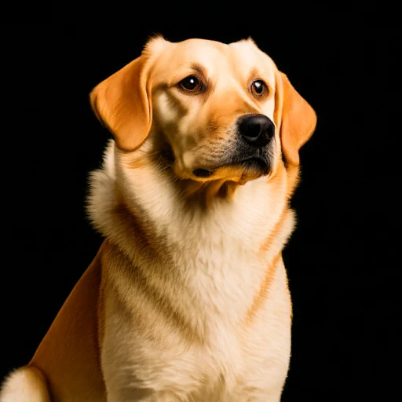
01 · Sample with guidance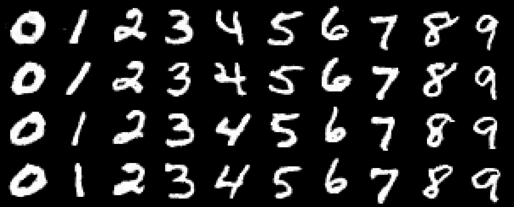
03 · Draw digits from noiseExploring the power of flow models
All Part A results use the pretrained PixNerd text-to-image flow model at 512 × 512.
Visualizing training and sampling
1.1 Constructing noisy training inputs
xt = (1 − t) ε + t x1, ε ∼ N(0, I)
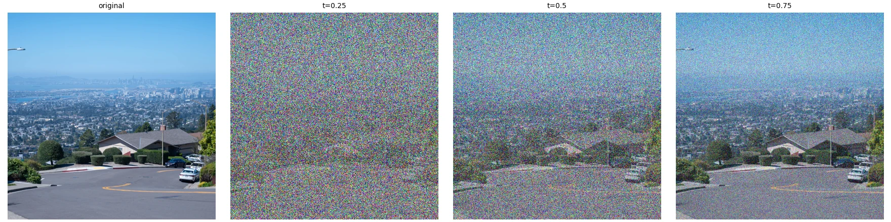
1.2 Classical denoising
x̂1 = Gσ(xt / t)


Each pair shows the noisy input and the Gaussian-blur estimate. σ was chosen from {1, 2, 4, 8, 16} as the value with the lowest mean squared error to the original; the chosen σ is printed above each result.
1.3 One-step denoising
x̂1 = xt + (1 − t) vθ(xt, t, c)
Prompt: "a high quality photo".
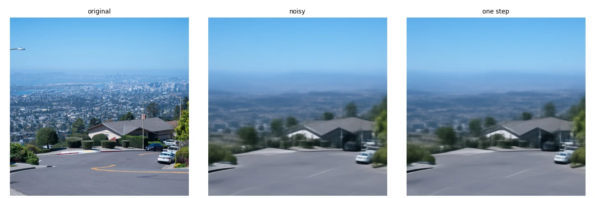
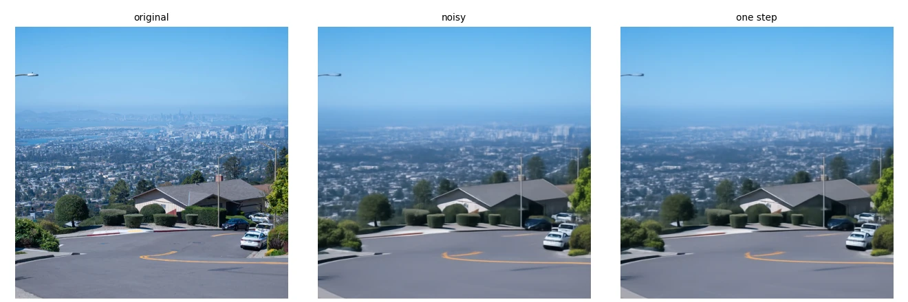
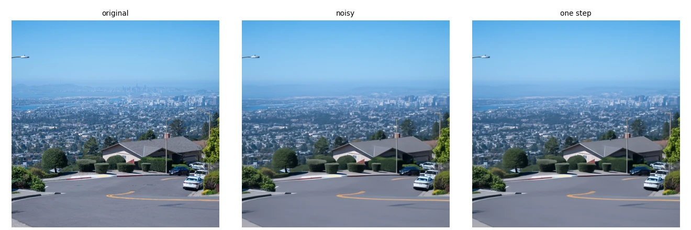
1.4 Visualizing velocity
Predicted update (1 − t) v̂t versus the ground-truth update (1 − t) vgt = x1 − xt, with the per-pixel RMS error over RGB.
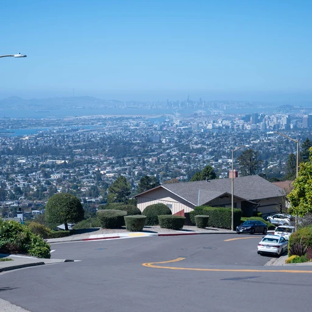
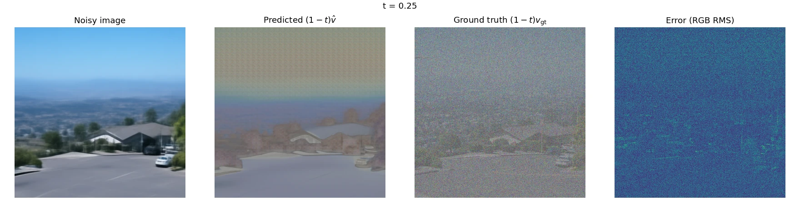
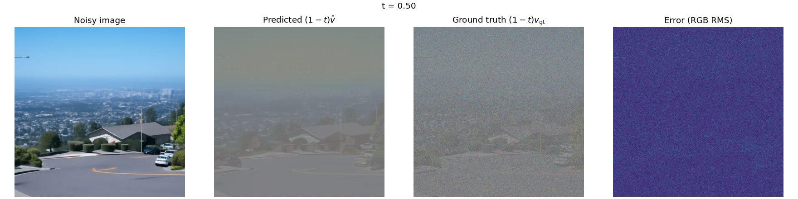
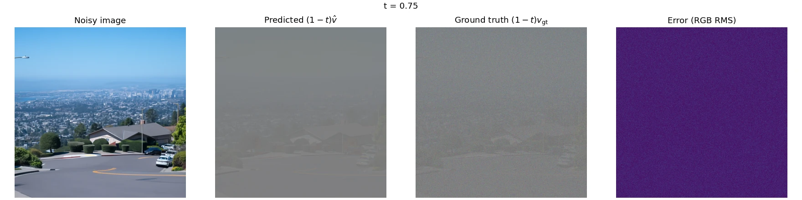
1.5 Iterative denoising with Euler sampling
xt+h = xt + h vθ(xt, t, c), h = 0.02
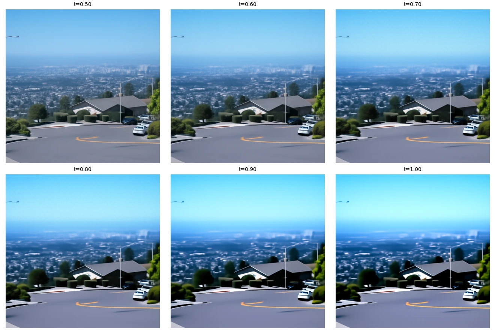
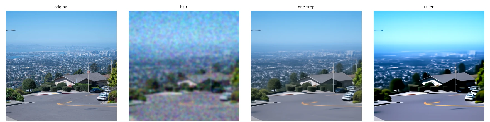
The Euler result is the sharpest of the four. The house edges, the cars and the road markings are crisp. The one-step estimate is smooth and slightly washed out. Gaussian blur cannot separate the noise from the image at all, so it leaves a grainy, low-contrast blur. The Euler result is not a faithful copy of the original, though. Fine detail such as the distant city is replaced by plausible but invented texture, and the colors are more saturated: the sky turns cyan and the shadows get darker. A single step predicts the average of every clean image consistent with the noisy input, and that average is blurry. Many small steps let the model commit to one sharp image, at the cost of departing from the original wherever the noise hid the true detail.
1.6 Generating images from noise
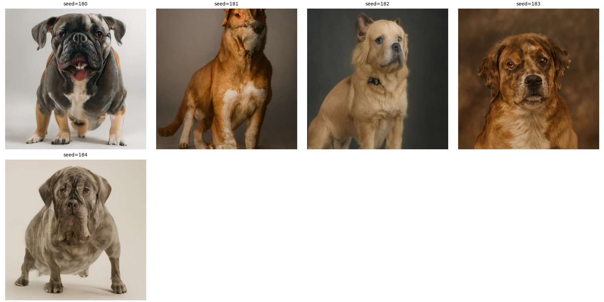
"a high quality photo" and no guidance. Seeds are printed above each image.All five samples are dogs, photographed like studio portraits against a plain gray, brown or white backdrop. The generic prompt "a high quality photo" strongly favors this one subject, probably because high-quality pet portraits are common in the model's training data. Without guidance the samples look plausible at first glance, but the textures are soft and the anatomy is often wrong, for example the shapeless, oversized body of the dog for seed 184.
Conditional generation and guidance
2.1 Classifier-free guidance
vcfg = vc + w (vc − vu), w = 7
vc uses "a high quality photo"; vu uses the empty prompt "".
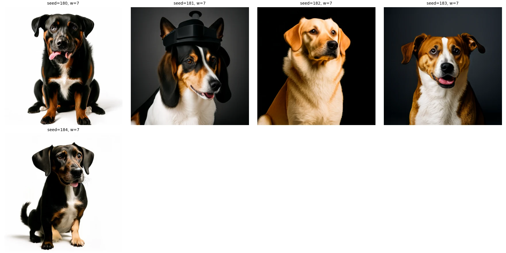
From the same five noise samples, CFG still produces dogs, but the images are clearly cleaner. Faces, eyes and fur are sharper, the lighting has more contrast, and the backgrounds collapse to plain white or black. The anatomy is more coherent than in 1.6, although seed 181 grew an odd hat-like object. Guidance pushes each sample further toward the prompt and away from the unconditional prediction. That improves quality and prompt adherence at the cost of diversity: the five images now share very similar poses, lighting and backgrounds.
Creative applications
All results in this section use Euler step h = 0.02 and CFG with w = 7, with the empty prompt as the unconditional prompt.
3.1 Image-to-image editing
Each image is noised to a starting time t and then denoised with the prompt "a high quality photo". Starting times: 0.02, 0.04, 0.06, 0.10, 0.14, 0.25, 0.50. Because t = 0 is pure noise, a smaller starting time keeps less of the input: at 0.02 the result is an unrelated new image, and by 0.25–0.50 it stays close to the original.
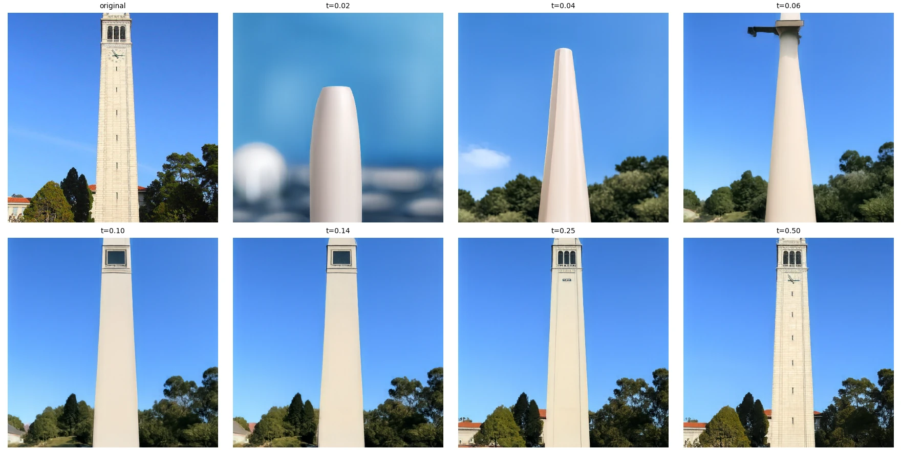
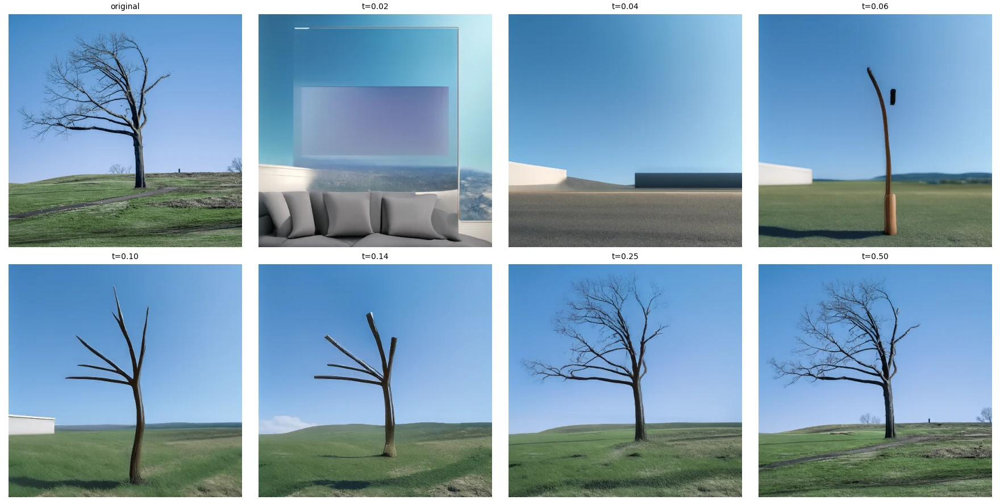
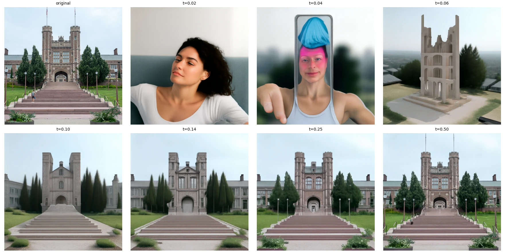
Editing hand-drawn and web images
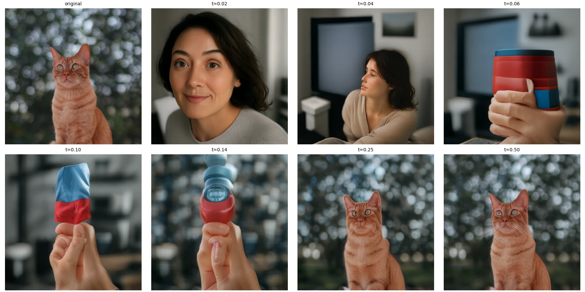
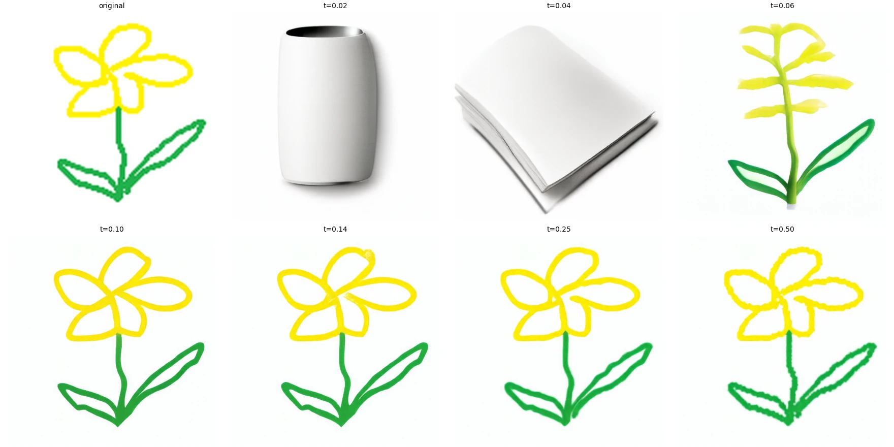
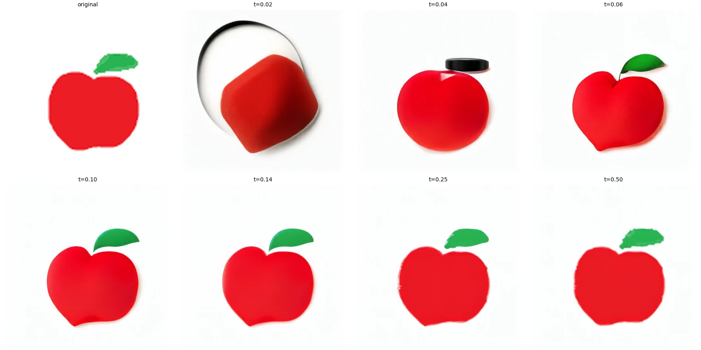
3.2 Text-guided image editing
Same procedure and starting times as 3.1, with a new prompt for each image.
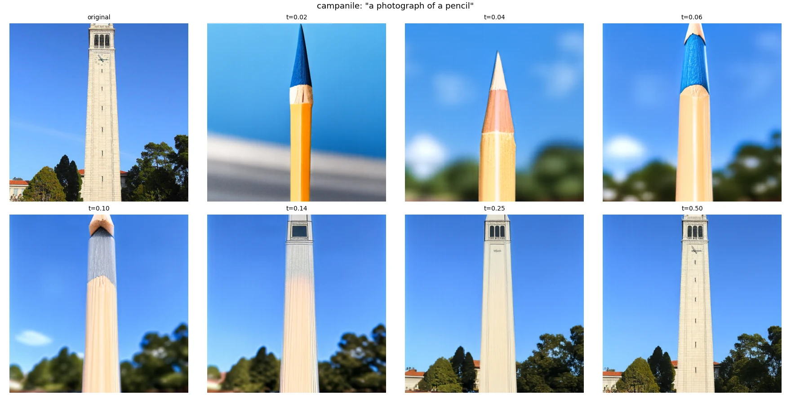
"a photograph of a pencil"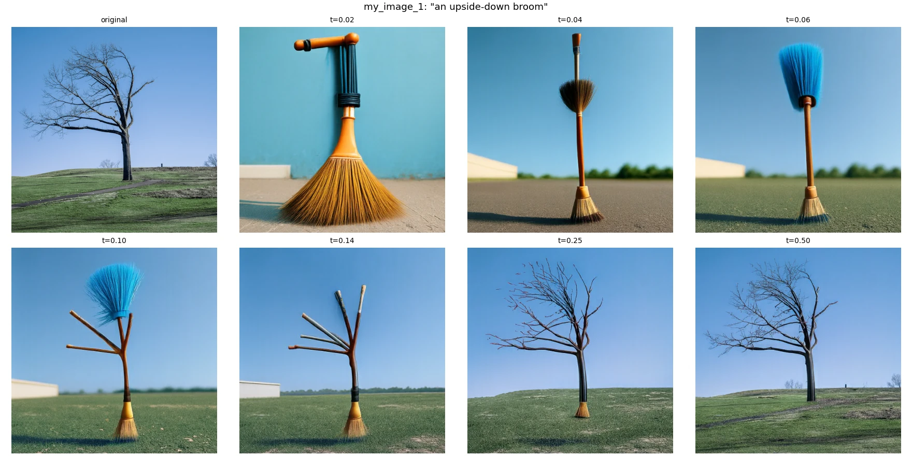
"an upside-down broom"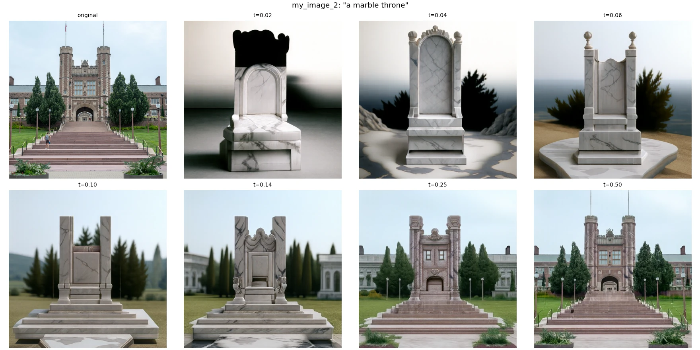
"a marble throne"3.3 Visual anagrams
v = ½ [ vcfg(xt, t, p1) + flip( vcfg(flip(xt), t, p2) ) ]

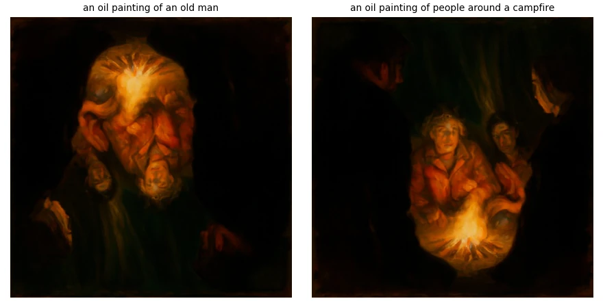
"an oil painting of an old man" · flipped 180°: "an oil painting of people around a campfire"
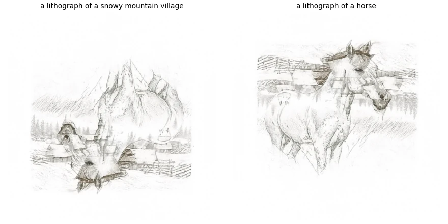
"a lithograph of a snowy mountain village" · flipped 180°: "a lithograph of a horse"3.4 Hybrid images
v = flowpass(v1) + fhighpass(v2)
The low-pass filter is a Gaussian blur with kernel size 265 and σ = 16. The high-pass part is a prediction minus its low-pass version. Each hybrid is shown close up and small, as if seen from far away.

"a lithograph of a waterfall" · far: "a lithograph of a skull"
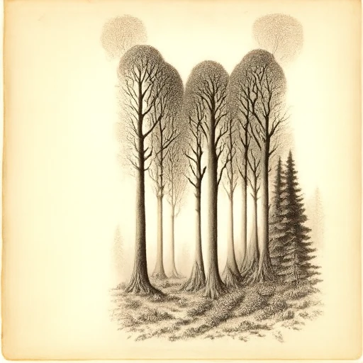
Close"a lithograph of a forest" · far: "a lithograph of a cat"More anagrams and a course logo
More visual anagrams: vertical reflection and color inversion

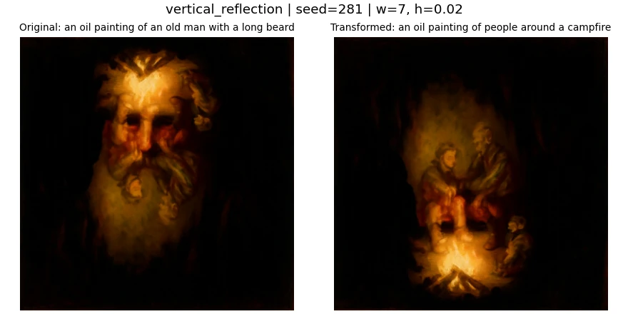
"an oil painting of an old man with a long beard" · reflected top to bottom: "an oil painting of people around a campfire"
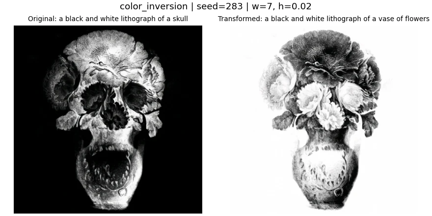
"a black and white lithograph of a skull" · inverted: "a black and white lithograph of a vase of flowers"Section 3.3 averages two velocities: one for prompt p1 on xt, and one for prompt p2 on a transformed image T(xt), mapped back with T−1. Any T works as long as it is orthogonal, so that a transformed noisy image is still a valid noisy image. Both transforms I used undo themselves (T−1 = T):
- Vertical reflection flips the image top to bottom. Unlike the 180° rotation in 3.3, left and right stay in place. The bearded man's lit forehead becomes the campfire, and the shadows of his face become the people sitting around it.
- Color inversion negates the image (x ↦ −x for pixel values in [−1, 1]). The bright skull on a black background becomes a dark vase of flowers on a white background; the eye sockets and cheekbones turn into flowers.
Both illusions work, but not perfectly. In the skull view, the floral texture is still visible inside the skull.
A computer vision course logo
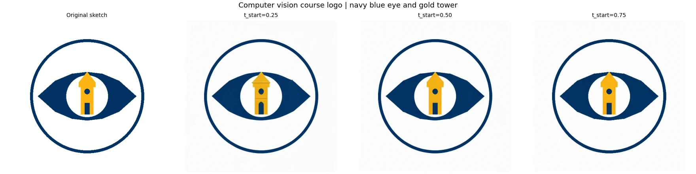
"a clean flat vector logo for a computer vision university course, a navy blue eye surrounding a golden university clock tower, circular badge, simple bold geometric shapes, navy blue and gold, centered on a plain white background, no text, no letters"I drew a simple sketch of the logo in code with PIL shapes: a navy eye inside a circular badge, with a gold clock tower as the pupil, a nod to the Campanile. Then I edited it with the prompt above at three starting times, all from the same noise (seed 284). A smaller starting time means more noise, so tstart = 0.25 changes the sketch the most: the tower gets a proper roof, a clock face and an arched doorway, while the circle and the eye keep their flat geometric shapes. At 0.50 and 0.75 the result stays almost identical to the sketch. I chose tstart = 0.25 as the final logo, shown at the top of this page.
Flow matching from scratch
All Part B models are UNets trained on the MNIST training set, with pixel values in [0, 1].
Training a single-step denoising UNet
1.2 The noising process
z = x + σ ε, ε ∼ N(0, I)
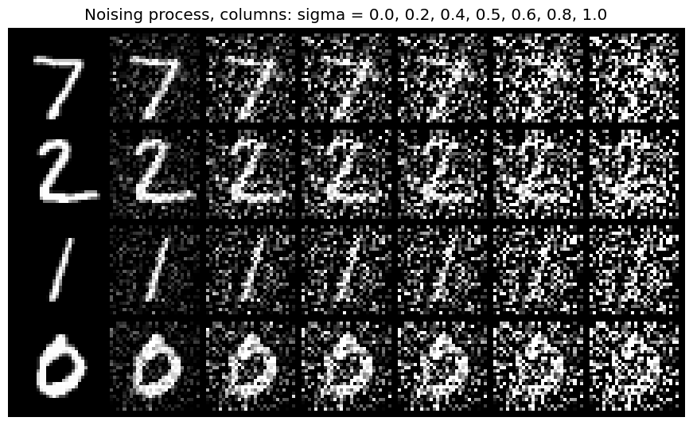
1.2.1 Training
| Noise level | σ = 0.5 |
|---|---|
| UNet hidden channels | D = 128 |
| Optimizer | Adam, learning rate 1e-4 |
| Batch size · epochs | 256 · 5 |
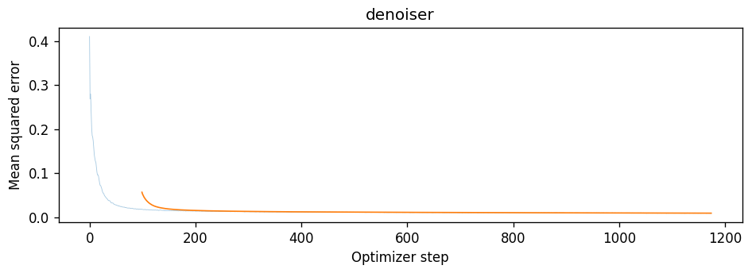
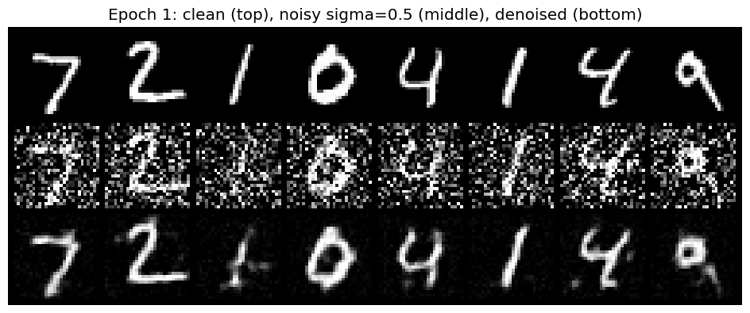
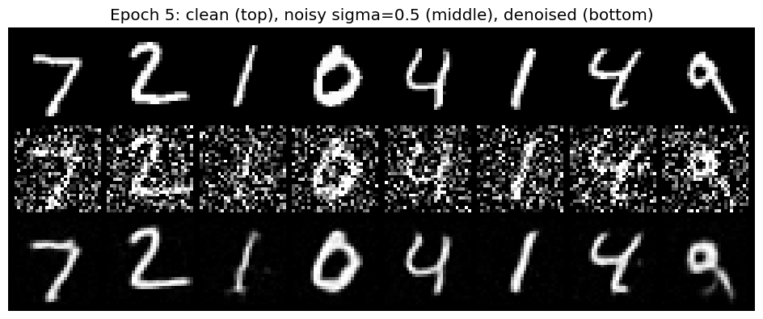
1.2.2 Out-of-distribution testing
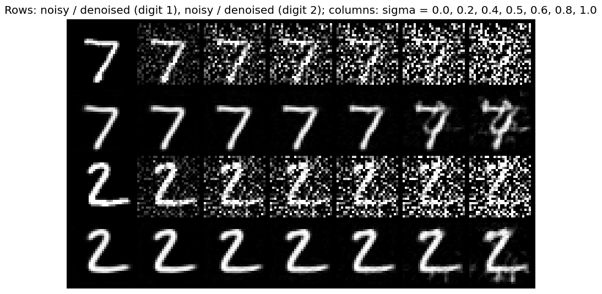
The denoiser handles every noise level up to about σ = 0.6 well, including levels it never saw during training, and it leaves the clean input (σ = 0) essentially unchanged. Above that it breaks down: at σ = 0.8 and 1.0 it leaves blotches and adds extra strokes around the digit, because the noise is stronger than anything it learned to remove.
1.2.3 Denoising pure noise
Same training setup as 1.2.1, but the input is pure noise z = ε, drawn independently of the target digit.
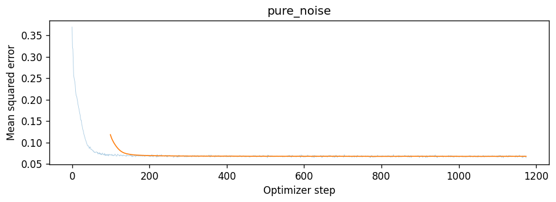
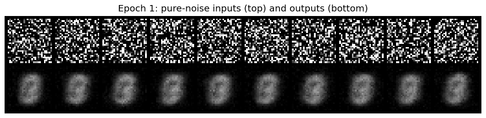
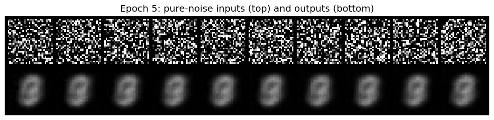
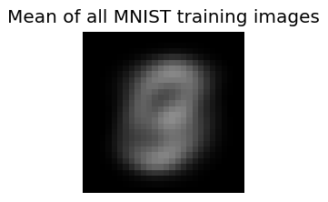
Patterns. Every output is the same blurry gray oval, whichever noise image goes in. After epoch 1 the oval still carries a little speckle; after epoch 5 it is smooth, and the ten outputs are practically identical. The oval looks like several digits drawn on top of each other: a bright ring like a 0, with fainter strokes through the middle like an 8 or a 3.
Relation to the training images. The outputs match the pixel-wise mean of all training images almost exactly. They are not any single digit 0–9, but an average over all of them.
Why. The input noise is independent of the target digit, so it carries no information about which digit to produce. Under an MSE loss, the best answer for an uninformative input is the point that minimizes the summed squared distance to all training images: their mean, or centroid. The network therefore learns to ignore its input and output the mean image. The loss agrees: it levels off at about 0.068, while the MSE of always predicting the mean image, computed directly on the training set, is 0.0673 (the average per-pixel variance). This is also why a one-step denoiser cannot generate new digits from pure noise.
Flow matching with time conditioning
xt = (1 − t) x0 + t x1, x0 ∼ N(0, I), target u = x1 − x0
| UNet hidden channels | D = 64 |
|---|---|
| Optimizer | Adam, initial learning rate 1e-2 |
| Scheduler | ExponentialLR, γ = 0.11/10, stepped once per epoch |
| Batch size · epochs | 64 · 10 |
2.2 Training
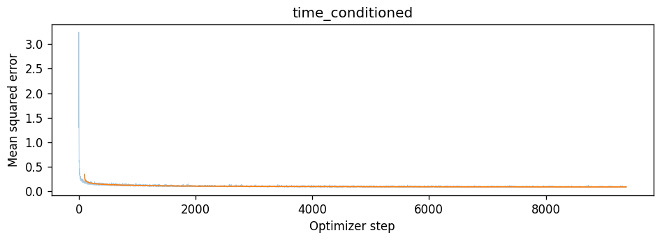
2.3 Sampling
40 samples, each with 50 Euler steps. All three grids start from the same noise (seed 0), so each position can be compared across epochs.
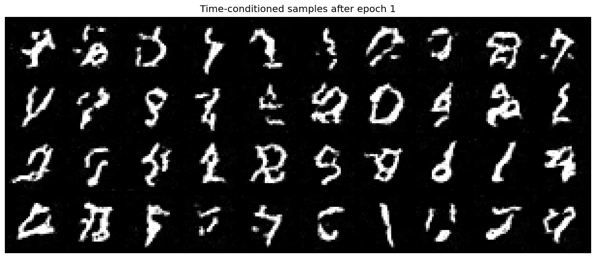
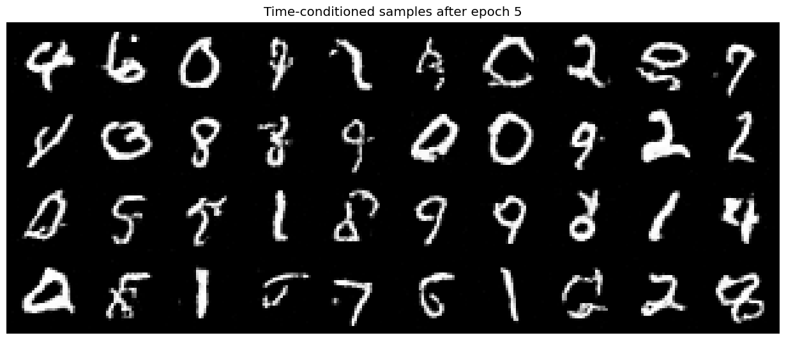
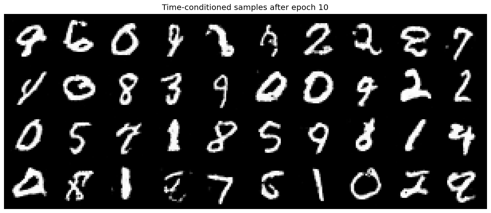
Adding class conditioning
The class is passed as a one-hot vector and dropped (set to zero) for 10% of training steps. Sampling uses classifier-free guidance with γ = 5.0. Other settings match section B · 2.
2.5 Training
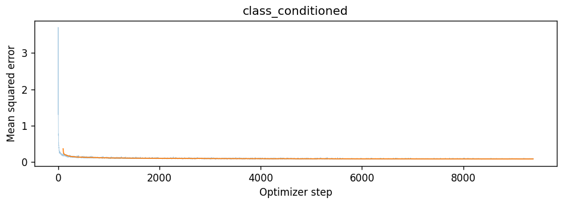
2.6 Sampling
Four samples of each digit: each row is 0–9, with 300 Euler steps and guidance scale γ = 5. All grids start from the same noise (seed 0).
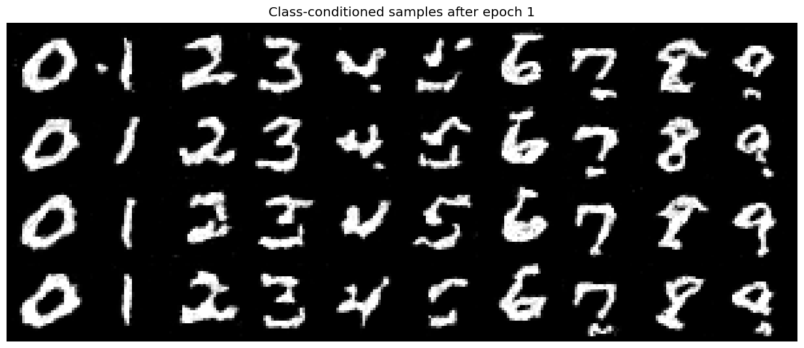
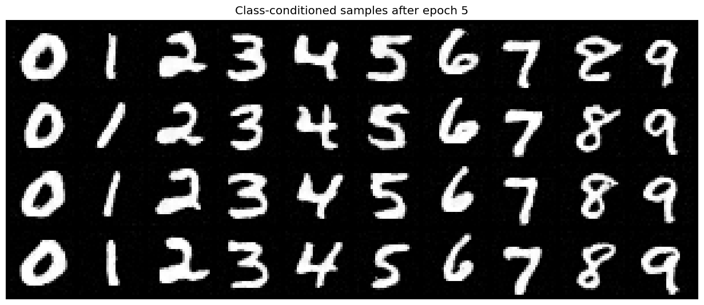
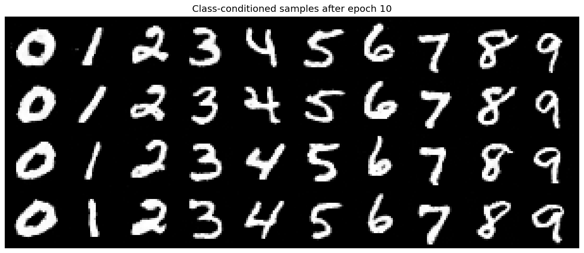
Without the learning-rate scheduler
To remove the exponential scheduler, I trained with a constant learning rate of 1e-3, the value the scheduled run reaches by its last epoch, instead of starting at 1e-2. A constant 1e-2 would keep taking large steps late in training, when the model should be settling. A constant 1e-3 is small enough to settle, and Adam's per-parameter step sizes still make early progress fast enough within 10 epochs. Everything else (data, architecture, 10 epochs, seed) is unchanged.
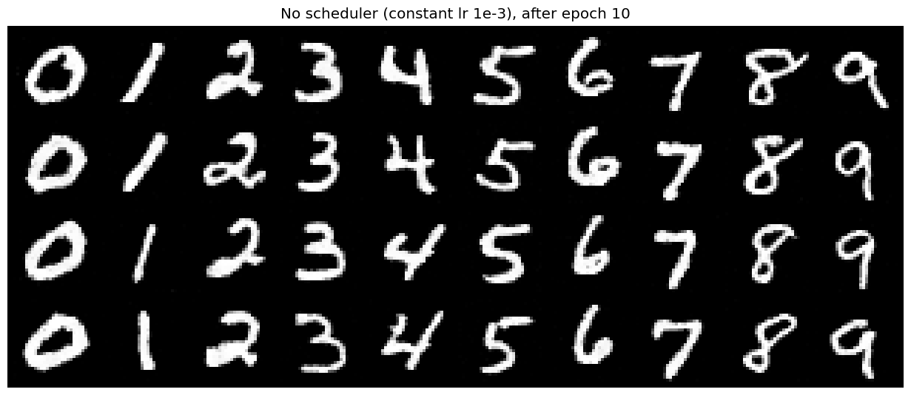
The result is on par with the scheduled run. After 10 epochs every sample is a clean digit of the requested class, and the final mean loss is almost the same (0.084 versus 0.083). The difference shows in the loss curve: without the scheduler it stays noisier throughout training, with more spikes, because the step size never shrinks.
A better time-conditioned UNet
The time-only model has to work out which digit to draw from the noise alone, which is harder than following a class label. I made it more expressive and trained it longer. I doubled the hidden channels (D = 64 → 128) and doubled the training (10 → 20 epochs), with the same Adam optimizer and an ExponentialLR schedule that now decays from 1e-2 to 1e-3 over the 20 epochs. I also sampled with 100 Euler steps instead of 50, which reduces the error from each discrete step.


The improvement is modest. Strokes are smoother, and several samples that were ambiguous in 2.3 now read as clear digits, such as the 2 and the 4 at the two ends of the bottom row. But about four of the 40 samples are still broken scribbles, and the final loss only went from 0.090 to 0.087. Without a class label the model still has to decide which digit to draw, and some starting noises land between digits.
Code & sources
- Assignment: Part A and Part B.
- Pretrained model: PixNerd text-to-image flow model, as provided with the Part A notebook.
- Campanile image from the assignment files. Test images and drawings are my own.
- Web image for 3.1: "An orange tabby cat" by Ludovic Delot, Pexels.
- MNIST loaded with
torchvision.datasets.MNIST.
Code is submitted separately on Gradescope.